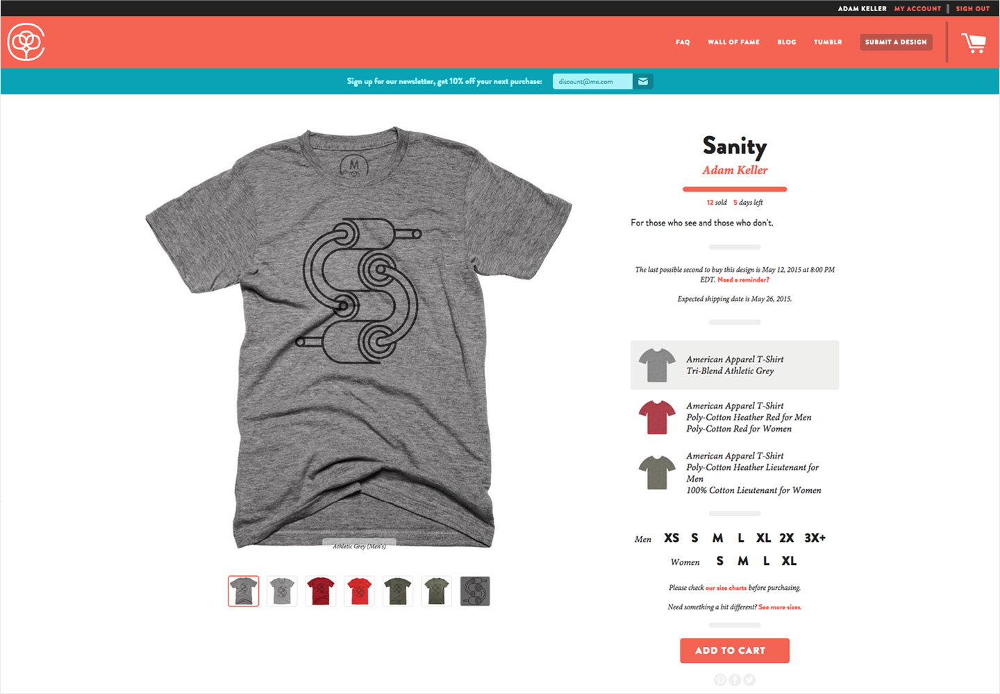
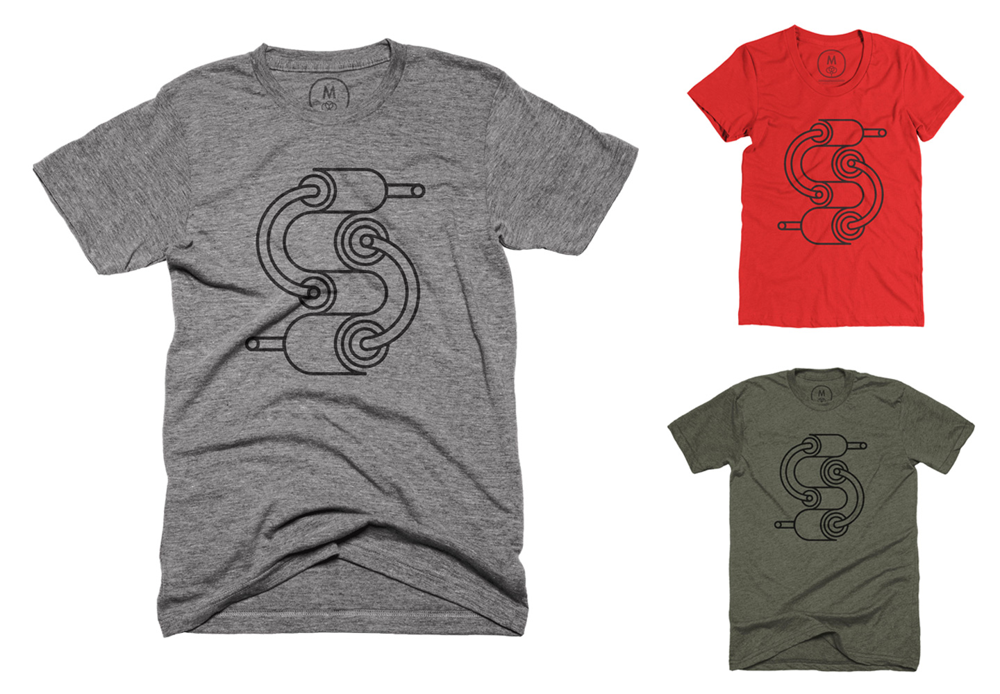

Literally keytar vinyl pork belly pickled, wolf butcher umami polaroid brunch disrupt. Cornhole vegan Intelligentsia locavore Williamsburg Brooklyn flexitarian fanny pack occupy. You probably haven't heard of them iPhone selfies synth pickled Shoreditch, vinyl plaid Etsy photo booth craft beer occupy Kickstarter McSweeney's umami. Seitan Banksy normcore polaroid. Sriracha keffiyeh Bushwick, hella messenger bag kale chips Truffaut 8-bit biodiesel. Cred artisan fanny pack next level, crucifix lomo selfies pop-up cliche. Kitsch chambray sriracha DIY 90's freegan, meh Banksy Austin crucifix retro.

